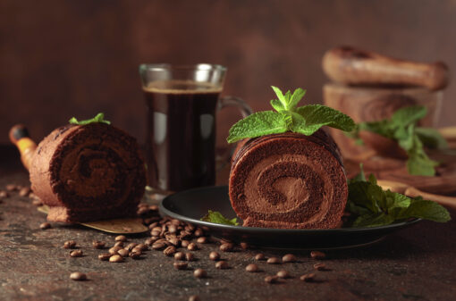
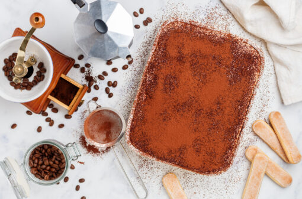
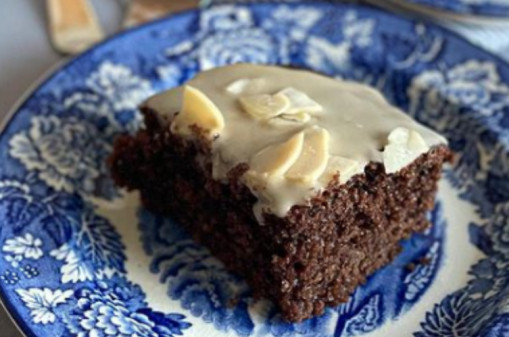

Primeiramente, coloque o leite condensado no fundo da taça e acrescente os cubos de gelo. Em seguida,
posicione o filtro em cima da taça para coar o café em cima do gelo. A ideia é dar um choque térmico no café, deixando a bebida com um sabor mais suave.
Depois, em uma caneca ou copo, misture o chantilly com o doce de leite. Mexa bastante até incorporar.
Por fim, adicione a mistura do chantilly com doce de leite na taça. Para completar, mexa todos os
ingredientes.
Agora é só desfrutar do seu drink gelado de café com doce de leite!

Rocambole de café e chocolate
Feito por: SC Hoje News
Ingredientes:
4 ovos
1 xícara de açúcar
1 xícara de farinha de trigo
½ xícara de chocolate em pó
1 colher de sopa de café solúvel
½ xícara de água
1 colher de sopa de fermento em pó
1 pitada de sal
Manteiga para untar
Açúcar de confeiteiro para decorar (opcional)
Modo de preparo:
Primeiramente, pré-aqueça o forno a 180°C e unte uma forma retangular com manteiga.
Depois, em uma tigela misture os ingredientes secos, como a farinha de trigo, o chocolate em pó e o fermento em pó.
Em outra tigela, bata os ovos com o açúcar até obter uma mistura homogênea e clara.
Na sequência, adicione a mistura de farinha aos poucos na mistura de ovos e açúcar, mexendo delicadamente.
Em uma xícara, dissolva o café solúvel na água quente e adicione à massa. Misture bem.
Adicione uma pitada de sal e misture novamente. Após, despeje toda a massa em uma forma untada e espalhe bem.
Leve ao forno por cerca de 15 minutos. Passado esse tempo, retire do forno e coloque a massa em cima de um pano de prato úmido.
Logo, enrole a massa com o pano de prato, ainda quente. E, depois, deixe esfriar.
Desenrole a massa e espalhe o recheio de sua preferência.
Logo, enrole novamente com a ajuda do pano de prato. Polvilhe açúcar de confeiteiro por cima e sirva.
Por fim, é só aproveitar essa deliciosa sobremesa com um toque de café!

Pavê de cappuccino
Feito por: Café Jaguari
Ingredientes:
16 biscoitos champanhe
2 colheres (sopa) de cappuccino, dissolvido em 3 colheres (sopa) de água quente
1 colher (chá) de extrato de baunilha
Um copo (250ml) de creme de leite fresco
150g de chocolate derretido para a cobertura
Uma colher (sopa) de açúcar de confeiteiro
Calda para o biscoito:
4 colheres (sopa) de cappuccino
200ml de água quente filtrada
Uma colher (sopa) de conhaque
Modo de preparo:
Primeiramente, misture o creme de leite, o cappuccino e o açúcar. Em seguida adicione a baunilha.
Para a calda, misture bem os ingredientes.
Do mesmo modo, coloque metade dos biscoitos champanhe em uma travessa e despeje metade da calda sobre eles. Depois, coloque a mistura do creme de leite por cima.
Nesse ínterim, acrescente outra camada de biscoito champanhe. Por cima, coloque o restante da calda e da mistura do creme de leite.
Por fim, despeje o chocolate derretido por cima do pavê e leve à geladeira até a hora de servir.
Milk shake de café
Feito por: Café Evolutto
Ingredientes:
3 bolas de sorvete de creme
120ml de leite
2 xícaras de café de sua preferência, já coado
3 paçocas
Calda de chocolate a gosto
Chantilly e raspas de chocolate para decorar
Modo de preparo:
Em um liquidificador, coloque as bolas de sorvete, o leite, as paçocas e o café já coado. Bata tudo.
Em um copo ou taça, decore com a calda de chocolate.
Despeje o conteúdo do liquidificador no copo ou taça.
Por fim, jogue o chantilly e as raspas de chocolate de sua preferência, dando um toque a mais. Se preferir, adicione também farelo de paçoca por cima.
Agora é só aproveitar essa bebida deliciosa!

Bolo de café sem glúten e sem lactose
Feito por: Jê Viecili
Ingredientes:
1 ovo
70g de açúcar mascavo
60g de óleo
60g de café forte, a sua escolha
10g de cacau em pó
40g de farinha de amêndoas
30g de farinha de arroz
40g de fécula de mandioca
Sal a gosto
1 colher de chá de fermento químico em pó
Cobertura:
70g de açúcar de confeiteiro
20ml de café passado
Amêndoas laminadas a gosto, para decorar
Modo de preparo:
Em uma vasilha, coloque o ovo, o açúcar, o óleo, o café passado e bata bem.
Adicione o cacau, as farinhas e misture até ficar homogêneo.
Acrescente o sal, o fermento e misture delicadamente.
Leve para assar em forno preaquecido a 180 °C por meia hora.
Em uma vasilha, coloque o açúcar de confeiteiro, o café passado e misture bem.
Assim que tudo estiver frio, coloque a cobertura por cima do bolo e finalize com as amêndoas laminadas.
Agora é só servir. Bom apetite!
Quer enviar uma receita? Ajude-nos a enriquecer esta sessão.
Enviar receita